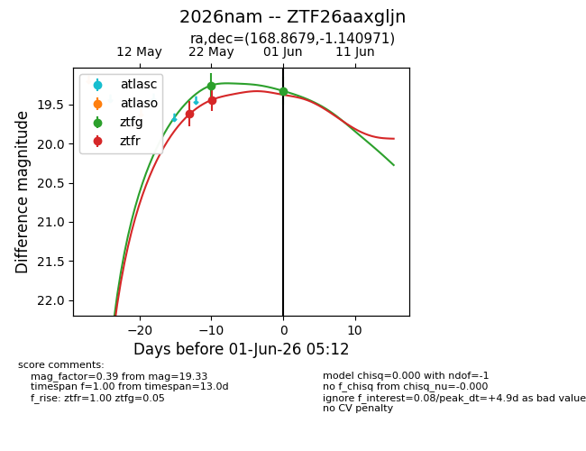
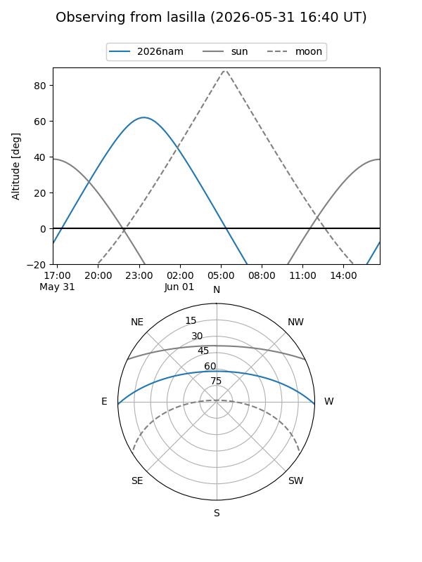
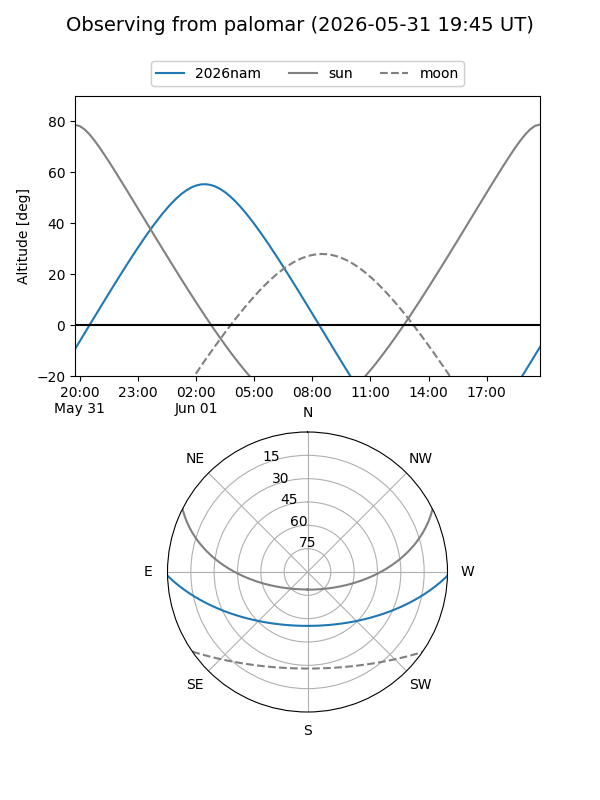
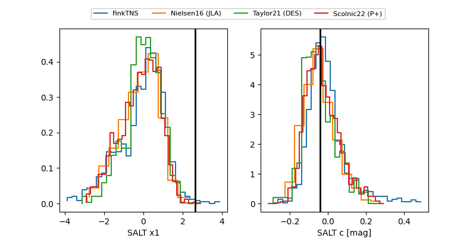

2026nam
Target 2026nam at 2026-06-01 05:14
Aliases and brokers:
lsst-FINK: link
lsst-Lasair: link
lsst-ALeRCE: link
ztf-FINK: link
ztf-Lasair: link
ztf-ALeRCE: link
TNS: link
YSE: link
alt names
ZTF26aaxgljn (ztf,fink_ztf)
2026nam (tns,yse)
Coordinates:
equatorial (ra, dec) = 168.8679,-1.14097
equatorial (HMS+DMS) = 11:15:28.30,-01:08:27.49
galactic (l, b) = (259.8194,+53.50002)
Flags:
Photometry:
last ztfg=19.33, ztfr=19.44
2 ztfg, 2 ztfr detections
Lightcurve

Visibility


Additional plots
